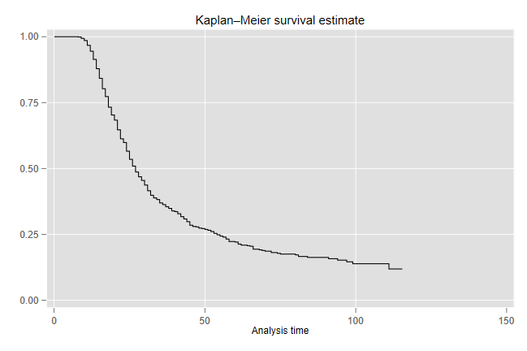
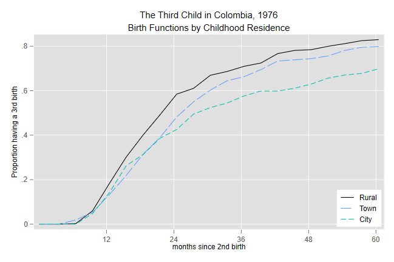
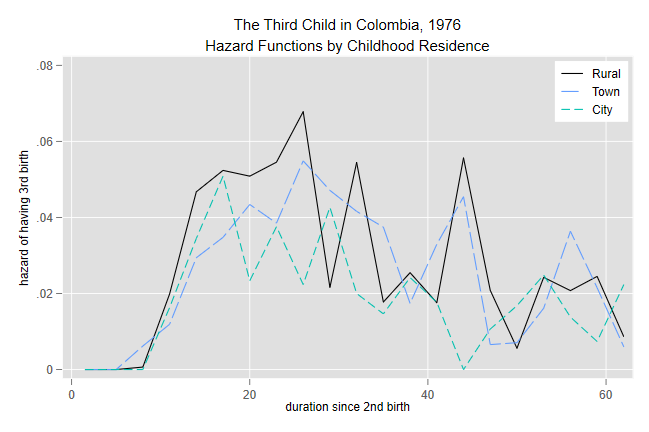

<h2 class="first" id="cobint">The Third Child in Colombia</h2>
<p>We will look at the interval from second to third birth using
Colombian WFS data, circa 1976. We start from an extract that has the
dates of R’s birth, date of interview, the birth history, date of first
union if any, and current and childhood type of place of residence.</p>
<pre class='stata'>. use https://grodri.github.io/datasets/cofertx, clear
(COSR02 extract)
</pre>
<h4 id="time-at-risk-and-event-indicator">Time at Risk and Event
Indicator</h4>
<p>We will use intervals that start in the ten years before the
interview and exclude twins. (The results are a bit different from my
paper with Hobcraft, which used all birth intervals, but I can reproduce
the earlier results by removing the period restriction.)</p>
<pre class='stata'>. keep if b022 >= v007-120 &amp; b022 &lt; v007
(4,144 observations deleted)

. drop if b032==b022      // only 6
(6 observations deleted)
</pre>
<p>We construct time at risk starting in the middle of the month of
birth of the second child and ending in the middle of the month when the
third child is born or at the end of the month before the interview,
whichever occurs first</p>
<pre class='stata'>. gen expo = b032 - b022

. replace expo = v007 - b022 -0.5 if v007 &lt;= b032
(496 real changes made)

. gen third = b032 &lt; v007
</pre>
<p>If we <code>stset</code> the data we can take advantage of Stata’s
survival analysis facilities. For example it is very easy to plot a
Kaplan-Meier estimate of survival at parity 2:</p>
<pre class='stata'>. gen id=_n

. stset expo, fail(third) id(id)

Survival-time data settings

           ID variable: id
         Failure event: third!=0 &amp; third&lt;.
Observed time interval: (expo[_n-1], expo]
     Exit on or before: failure

──────────────────────────────────────────────────────────────────────────
      1,228  total observations
          0  exclusions
──────────────────────────────────────────────────────────────────────────
      1,228  observations remaining, representing
      1,228  subjects
        732  failures in single-failure-per-subject data
     34,388  total analysis time at risk and under observation
                                                At risk from t =         0
                                     Earliest observed entry t =         0
                                          Last observed exit t =     115.5

. sts graph

        Failure _d: third
  Analysis time _t: expo
       ID variable: id

. graph export co3rdkm.png, replace
file co3rdkm.png saved as PNG format
</pre>
<p></p>
<h4 id="segments-of-exposure">Segments of Exposure</h4>
<p>We will take advantage of Stata’s facilities to split the exposure
into 3 month segments. The cutpoints have the form 0 3.5 6.5 9.5 … 57.5
60.5 120.</p>
<pre class='stata'>. stsplit segment, at(0 3.5(3)60.5 120)
(9,844 observations (episodes) created)
</pre>
<p>Stata’s built-in variables <code>_t</code> and <code>_t0</code> have
the start and end of each segment and <code>_d</code> has the death
indicator. We use these to compute events and exposure. This is not a
bad time to save the data.</p>
<pre class='stata'>. replace expo = _t-_t0
(9,844 real changes made)

. gen births = _d

. save temp,replace
file temp.dta saved
</pre>
<p>We then collapse to obtain total events and exposure by duration
(segment) and childhood place of residence.</p>
<pre class='stata'>. drop if v703 > 3 // a few missing values
(36 observations deleted)

. collapse (sum) births (sum) expo , by(segment v703)
</pre>
<p>At this point we can easily calculate life tables.</p>
<h4 id="the-birth-function">The Birth Function</h4>
<p>I will compute the hazard dividing births by exposure and then use
the constant hazard assumption to estimate the cumulative hazard and
survival (or rather its complement, the birth function). You can get
very similar results assuming that events occur half-way through each
three-month interval. (Even more similar if we had used single
months.)</p>
<pre class='stata'>. gen h = births/expo

. bysort v703 (segment): gen H = 3*sum(h)

. gen B = 1-exp(-H)       // the birth function

. separate B, by(v703)

Variable      Storage   Display    Value
    name         type    format    label      Variable label
────────────────────────────────────────────────────────────────────────────────
B1              float   %9.0g                 B, v703 == Rural
B2              float   %9.0g                 B, v703 == Town
B3              float   %9.0g                 B, v703 == City

. line B1 B2 B3 segment, lpat(solid longdash dash) ///
>   title("The Third Child in Colombia, 1976") ///
>   subtitle(Birth Functions by Childhood Residence) ///
>   ytitle(Proportion having a 3rd birth) /// 
>   xlabel(12 24 36 48 60) xtitle(months since 2nd birth) ///
>   legend(order(1 "Rural" 2 "Town" 3 "City") ///
>   col(1) ring(0) pos(5))

. graph export co3rdbirth.png, replace
file co3rdbirth.png saved as PNG format
</pre>
<p></p>
<p>We see that the proportions moving to parity three are higher for
women of rural origins than for others at every duration. Women who grew
up in towns are a bit less likely to have a third child, and when they
do they have it later. Women who grew up in cities are much less likely
to have a third child in the long run, but they are also more likely
than townfolk to have very short intervals, with a cross-over around 18
months.</p>
<h4 id="quintums-and-trimeans">Quintums and Trimeans</h4>
<p>To compute quintums we need to interpolate in the category 57.5-60.5.
Linear interpolation would probably do, but with constant hazard a more
exact calculation based on S(60) = S(57.5) exp{-2.5 h(57.5)} gives Q =
1-(1-B(57.5))exp{-2.5 h(57.5)}. Note that the way we calculated things,
the survival and birth functions pertain to the <em>end</em> of each
segment, which is why the code below looks at 54.5</p>
<pre class='stata'>. gen Q =1-(1-B[_n]) * exp(-2.5*h[_n+1]) if  segment==54.5
(60 missing values generated)

. list v703 segment h B Q if segment > 54 &amp; v703 &lt; 9, sep(3)

     ┌──────────────────────────────────────────────────┐
     │  v703   segment          h          B          Q │
     ├──────────────────────────────────────────────────┤
 19. │ Rural      54.5   .0207612   .8118494   .8230233 │
 20. │ Rural      57.5   .0244898   .8251771          . │
 21. │ Rural      60.5   .0086022    .829631          . │
     ├──────────────────────────────────────────────────┤
 40. │  Town      54.5   .0363636   .7815775   .7930105 │
 41. │  Town      57.5   .0215054   .7952242          . │
 42. │  Town      60.5   .0059435   .7988432          . │
     ├──────────────────────────────────────────────────┤
 61. │  City      54.5   .0137931   .6706035   .6766252 │
 62. │  City      57.5   .0073801   .6778163          . │
 63. │  City      60.5   .0223537   .6987138          . │
     └──────────────────────────────────────────────────┘
</pre>
<p>So the quintums are 82.3, 79.3 and 67.7 for women who grew up in
rural areas, towns and cities. (These are a bit lower than in my paper
with Hobcraft, reflecting the fact that they pertain to more recent
births.)</p>
<p>To obtain the trimean we use a similar interpolation strategy for
computing the quartiles and then apply Tukey’s formula. I will
illustrate with rural women. A quarter of the quintum of .823 is .206,
so we need the durations by which 20.6, 41.2 and 61.7% of the women have
moved to parity 3. For the first value we need to interpolate in
category 9.5-12.5. Write 1 - 0.206 = (1-B(9.5)) exp{-2.5 h(9.5)(Q1-9.5)}
and solve for Q1 to obtain Q1 = 9.5 -log((1-0.206)/(1-B(9.5)))/h(9.5).
Because the calculations are repetitive I encapsulate them in a little
program which takes as argument a category of v703, finds the row where
we need to interpolate, and applies the above formula:</p>
<pre class='stata'>. capture program drop trimean

. program define trimean
  1.   args ctpr
  2.   quietly sum Q if v703==`ctpr'
  3.   local q = r(mean)/4
  4.   local T = 0
  5.   tempvar i
  6.   gen `i' = _n
  7.   forvalues k=1/3 {
  8.     local b = `k'*`q'
  9.     quietly sum `i' if v703==`ctpr' &amp; B &lt; `b'
 10.     local n = r(max)
 11.     local Q = seg[`n']-log((1-`b')/(1-B[`n']))/h[`n'+1]
 12.     display "Q`k' = `Q'"
 13.     local T = `T' + `Q'
 14.     if (`k' == 2) local T = `T' + `Q'
 15.   }
 16.   local T = `T'/4
 17.   display "Trimean: `T'"
 18. end
</pre>
<p>We now run the computations for the three categories</p>
<pre class='stata'>. trimean 1
Q1 = 13.04612965753713
Q2 = 18.84358957514994
Q3 = 27.81360231842412
Trimean: 19.63672778156528

. trimean 2
Q1 = 14.75915079139585
Q2 = 21.72924126033396
Q3 = 30.01968865537609
Trimean: 22.05933049185996

. trimean 3
Q1 = 13.15086885691453
Q2 = 19.51578799192259
Q3 = 28.77935879083599
Trimean: 20.24045090789892
</pre>
<p>So the average birth intervals for those who go on to have a third
child are 19.6, 22.1 and 20.2 months, respectively, for women who grew
up in rural areas, towns and cities. (The intermediate value for the
last group was also observed in the analysis using all intervals.)</p>
<h4 id="the-hazard-functions">The Hazard Functions</h4>
<p>The fact that the hazard functions are somewhat noisy is easily
verified:</p>
<pre class='stata'>. separate h, by(v703)

Variable      Storage   Display    Value
    name         type    format    label      Variable label
────────────────────────────────────────────────────────────────────────────────
h1              float   %9.0g                 h, v703 == Rural
h2              float   %9.0g                 h, v703 == Town
h3              float   %9.0g                 h, v703 == City

. gen d = segment+1.5

. line h1 h2 h3 d, lpat(solid longdash dash) ///
>   title("The Third Child in Colombia, 1976") ///
>   subtitle(Hazard Functions by Childhood Residence) ///
>   xtitle(duration since 2nd birth) ///
>   ytitle(hazard of having 3rd birth) ///
>   legend(order(1 "Rural" 2 "Town" 3 "City") ring(0) col(1) pos(2))

. graph export co3rdhaz.png, replace
file co3rdhaz.png saved as PNG format
</pre>
<p></p>
<p>Fitting a proportional hazards model is quite easy using the Poisson
trick. (This is covered in some detail in the GLM course.)</p>
<p>Let us construct dummy variables for duration and childhood residence
and then run a regression for the first five years using the log of
exposure time as an offset.</p>
<pre class='stata'>. gen town = v703==2

. gen city = v703==3

. forvalues d = 12(3)57 {
  2.   gen dur`d' = segment == `d'.5
  3. }

. gen os = log(expo)

. gen touse = seg > 9 &amp; seg &lt; 60 

. poisson births dur12-dur57 town city if touse, offset(os)

Iteration 0:   log likelihood = -126.22561  
Iteration 1:   log likelihood = -125.00294  
Iteration 2:   log likelihood =  -124.9991  
Iteration 3:   log likelihood =  -124.9991  

Poisson regression                                      Number of obs =     51
                                                        LR chi2(18)   = 120.26
                                                        Prob > chi2   = 0.0000
Log likelihood = -124.9991                              Pseudo R2     = 0.3248

─────────────┬────────────────────────────────────────────────────────────────
      births │ Coefficient  Std. err.      z    P>|z|     [95% conf. interval]
─────────────┼────────────────────────────────────────────────────────────────
       dur12 │   .8387151   .1677175     5.00   0.000     .5099949    1.167435
       dur15 │   1.030044   .1672236     6.16   0.000     .7022913    1.357796
       dur18 │   .9195063   .1758572     5.23   0.000     .5748326     1.26418
       dur21 │    1.00266   .1794974     5.59   0.000      .650851    1.354468
       dur24 │   1.131769   .1816092     6.23   0.000     .7758211    1.487716
       dur27 │   .7913616   .2053167     3.85   0.000     .3889482    1.193775
       dur30 │   .9017034    .209525     4.30   0.000     .4910419    1.312365
       dur33 │   .3386295   .2624972     1.29   0.197    -.1758555    .8531145
       dur36 │   .3342246   .2728632     1.22   0.221    -.2005775    .8690267
       dur39 │   .3081459   .2853069     1.08   0.280    -.2510455    .8673372
       dur42 │   .7543197   .2579441     2.92   0.003     .2487585    1.259881
       dur45 │  -.1988996   .4022531    -0.49   0.621    -.9873012    .5895019
       dur48 │  -.4680164   .4679286    -1.00   0.317     -1.38514    .4491068
       dur51 │   .3255532   .3448924     0.94   0.345    -.3504236     1.00153
       dur54 │   .3411703   .3606533     0.95   0.344    -.3656972    1.048038
       dur57 │   .0717598   .4308883     0.17   0.868    -.7727656    .9162853
        town │  -.2020243    .088543    -2.28   0.023    -.3755654   -.0284831
        city │  -.3866947   .0977489    -3.96   0.000     -.578279   -.1951103
       _cons │  -3.951717   .1419443   -27.84   0.000    -4.229923   -3.673512
          os │          1  (offset)
─────────────┴────────────────────────────────────────────────────────────────

. estat gof

         Deviance goodness-of-fit =  51.44754
         Prob > chi2(32)          =    0.0161

         Pearson goodness-of-fit  =  45.39549
         Prob > chi2(32)          =    0.0587
</pre>
<p>The duration coefficients track an early increase in hazard up to
about a year and a half followed by a steady decline thereafter. On
average, at any given duration since second birth the risk of having a
third child is 18.3% lower for women who grew up in towns and 32.1%
lower for women who grew up in cities than for those who grew up in
rural areas. The goodness of fit test indicates, however, that the
hazards for the three categories of childhood residence are not
proportional. This is consistent with the differences in timing between
women with town and city origins noted earlier.</p>
